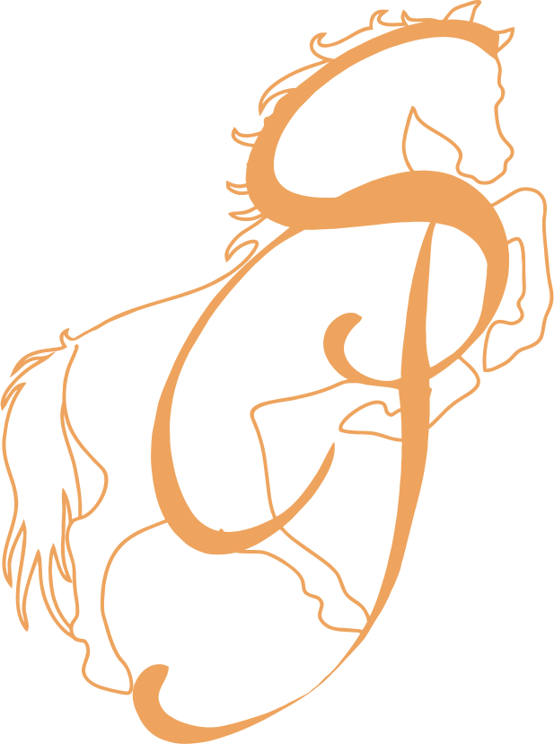

A FORÇA DO CAMPO:
PARA QUEM SENTE LIBERDADE AO OUVIR O TROTE
Equipamentos, acessórios e tradição para quem vive a paixão pelo universo equestre.
Equipamentos, acessórios e tradição para quem vive a paixão pelo universo equestre.
Na Selaria Picape, cada produto é pensado para oferecer qualidade, conforto e estilo para os amantes do campo e dos cavalos. Nossa missão é proporcionar uma experiência única, unindo tradição e modernidade em cada detalhe. Seja para cavaleiros experientes ou para aqueles que estão começando a explorar o mundo equestre, temos tudo o que você precisa para viver a paixão pelo universo country.


Nossa sela é feita com couro de alta qualidade, garantindo conforto, resistência e durabilidade para o dia a dia.
Cada detalhe é cuidadosamente trabalhado com couro legítimo, garantindo resistência, conforto e um acabamento impecável.
A Selaria Picape nasceu da paixão pelo universo country e pela tradição equestre. Trabalhamos com produtos pensados para oferecer qualidade, resistência e estilo para cavaleiros, amazonas e amantes do campo.
Unimos tradição e modernidade em cada detalhe, trazendo selas, acessórios e equipamentos que valorizam conforto, segurança e autenticidade.
Nosso compromisso é entregar produtos duráveis, com acabamento de qualidade e identidade country marcante.Mais do que uma loja, somos apaixonados pelo estilo de vida do campo, pela conexão com os cavalos e pela liberdade que a montaria representa.

Oferecer produtos de qualidade para o universo equestre, valorizando a tradição country e proporcionando confiança em cada cavalgada.
Ser referência em selaria moderna, reconhecida pela qualidade, atendimento e paixão pelo mundo dos cavalos.
Tradição, confiança, paixão pelos cavalos, qualidade e respeito ao cliente.